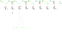

What goals & assumptions are implicit in the way we act?
Three types of motivating applications.
Share road with many actors
Illustration: Bryan Christie Design
Detecting Mode Confusion + Unused Features
Saifan, et al. "Using formal methods for test case generation according to transition-based coverage criteria." 2015.
Nobody reads the manual...
Saifan, et al. "Using formal methods for test case generation according to transition-based coverage criteria." 2015.
Specializing on the fly
Overcooked cooking simulator
Research Stack
Teaching tasks using demonstrations
Learning tasks from demonstrations
Maximum Entropy Planning
Research Stack
Teaching tasks using demonstrations
Learning tasks from demonstrations
Maximum Entropy Planning
Research Stack
Teaching tasks using demonstrations
Learning tasks from demonstrations
Maximum Entropy Planning
How to infer a task?
Many different signals to use for inference
Decades of research in learning rewards from demonstrations
Decades of research in learning rewards from demonstrations
Inverse Reinforcement Learning
Given a series of demonstrations, what reward, $r(s)$, best explains
the behavior? (Abbeel and Ng 2004)
Consider an agent acting in the following
stochastic grid world.
Can try to move up, down, left, right
May slip due to wind
What is the agent trying to do?
Probably trying to reach yellow tiles
Although these actions are surprising under that hypothesis
And isn't it easier to go to this yellow tile any way?
A lot of information from a single incomplete demonstration
Communication through actions
Essential for interpreting other signals: (Language, Disengagments, Other agents)
Goodman, et al. "Pragmatic language interpretation as probabilistic inference." TiCS `16
McPherson, et al. "Modeling supervisor safe sets for improving collaboration in human-robot teams." IROS `18
Afolabi, et al. "People as sensors: Imputing maps from human actions." IROS `18.
Communication through actions
Essential for interpreting other signals: (Language, Disengagments, Other agents)
Goodman, et al. "Pragmatic language interpretation as probabilistic inference." TiCS `16
McPherson, et al. "Modeling supervisor safe sets for improving collaboration in human-robot teams." IROS `18
Afolabi, et al. "People as sensors: Imputing maps from human actions." IROS `18.
Actions are incredibly diagnostic.
Dragan, et al, "Legibility and predictability of robot motion." HRI `13.
Ho, et al, "Showing versus doing: Teaching by demonstration". NIPS `16
Sadigh, et al. "Planning for autonomous cars that leverage effects on human actions." RSS `16.
How should we represent learned tasks?
Desired Properties
Decouple task from dynamics.
Prefer sparse rewards.
Support describing temporal tasks.
Abel, et al. "On the Expressivity of Markov Reward.",
NeurIPS `21.
Support composition.
Markovian Rewards couple environment with task
Reach yellow. Avoid red.
Taking away top left yellow causes error
Reach yellow. Avoid red.
Solution: Sparse reward + memory
Reach yellow. Avoid red.
Solution: Sparse reward + memory
Reach yellow. Avoid red.
Key question: What memory?
Solution: Sparse reward + memory
Reach yellow. Avoid red.
Key question: What memory?
But first: How to represent task?
Proposal: Tasks as Boolean Specifications
A (Boolean) specification,
$\varphi$, is a set of traces.
We say $\xi$ satisfies $\varphi$,
if $\xi \in \varphi$.
$[\xi \in \varphi]$ is a sparse objective.
Task Specifications derived from Formal Logic, Automata, etc
Will call a collection of task specifications a concept class.
Support incremental learning
Incrementally Learn smaller/simpler rules
Explictly support learning memory
Specifications have our desired properties
Desired Properties
Decouple task from dynamics.
Prefer sparse rewards.
Support describing temporal tasks.
Abel, et al. "On the Expressivity of Markov Reward.",
NeurIPS `21.
Proxy policy exponentially favors high value prefixes
\begin{equation}
\ln\pi_\lambda(a~|~s_{1:t}) = Q_\lambda(s_{1:t}, a) - V_\lambda(s_{1:t})
\end{equation}
Will revisit.
Reward Learning offers many ways to rank specifications
Inverse Optimal Control
Daniel Kasenberg, Matthias Scheutz.
"Interpretable apprenticeship learning with temporal logic specifications." CDC `17
Glen Chou, Necmiye Ozay, Dmitry Berenson.
"Explaining Multi-stage Tasks by Learning Temporal Logic Formulas from Suboptimal Demonstrations." RSS `22
Bayesian Inference
Ankit Shah, Pritish Kamath, Julie A. Shah, Shen Li.
"Bayesian Inference of Temporal Task Specifications from Demonstrations." NeurIPS `18
Hansol Yoon, Sriram Sankaranarayanan.
"Predictive Runtime Monitoring for Mobile Robots using Logic-Based Bayesian Intent Inference." ICRA `21
Maximum Entropy Inverse Reinforcement Learning
Marcell Vazquez-Chanlatte, Susmit
Jha, Ashish Tiwari, Mark K. Ho, and
Sanjit A. Seshia. "Learning Task
Specifications from Demonstrations."
NeurIPS. `18.
Marcell Vazquez-Chanlatte, and Sanjit
A. Seshia. "Maximum Causal Entropy
Specification Inference from
Demonstrations." CAV `20
Key question: What memory?
Problem: No gradient to guide search over discrete structure.
Literature focused on Naïve syntactic search
Literature focused on Naïve syntactic search
Vazquez-Chanlatte, et al, "Learning Task Specifications from Demonstrations." NeurIPs`18.
Problems with syntatic search
Vazquez-Chanlatte, et al, "Learning Task Specifications from Demonstrations." NeurIPs`18.
Conflates inductive bias with search efficiency.
When teaching even harder to justify.
Want generic strategy that works with less structured concept classes.
Ignores the demonstrations!
Solution: Sparse reward + memory
Reach yellow. Avoid red.
Key question: What memory?
Enough memory to seperate good vs bad
Results in walk through labeled example space
Guide search by minimizing surprise
\[
h(\varphi) \triangleq \# \text{ of nats to describe demonstrations assuming } \varphi.
\]
Note: Using function composition, can build BDD in polynomial time.
Summary
Talk was biased towards Learning Contributions
Learn task specifications from (un)labeled and (in)complete demonstrations in a MDP.
Support incremental and monolithic learning.

Only needs blackbox access to a MaxEnt planner and Concept Identifer.
Contributions
Learn task specifications from (un)labeled and (in)complete demonstrations in a MDP.
Support incremental and monolithic learning.
Only needs blackbox access to a MaxEnt planner and Concept Identifer.
Can automatically generate pedagogic demonstrations.
Efficient MaxEnt planning in symbolic Stochastic Games.
Marcell Vazquez-Chanlatte, Susmit
Jha, Ashish Tiwari, Mark K. Ho, and
Sanjit A. Seshia. "Learning Task
Specifications from Demonstrations."
NeurIPS. `18.
Marcell Vazquez-Chanlatte, and Sanjit
A. Seshia. "Maximum Causal Entropy
Specification Inference from
Demonstrations." CAV `20
Marcell Vazquez-Chanlatte, Ameesh Shah,
Gil Lederman, and
Sanjit A. Seshia. "Demonstration Informed Specification Search"
In submission.

Exact Probablistic Model Checking of Finite Markov Chains
Sebastian Junges, Steven Holtzen,
Marcell Vazquez-Chanlatte, Todd
Millstein, Guy Van den Broerk, Sanjit
A. Seshia. "Model Checking
Finite-Horizon Markov Chains with
Probabilistic Inference", CAV `21
By no means solved
Clear path to scaling up

Need estimate of policy on prefix tree.
Need a way to sample likely paths from policy.
Plays nicely with approximate methods
Monte Carlo Tree Search (e.g., Smooth Cruiser [1])
Function Approximation (e.g., Soft Actor Critic [2])
Promising preliminary results using Graph Neural Networks
Works with any supervised learner
Can in principle do Decision Trees and Symbolic Automata.
Works with any supervised learner
Could use natural language or other signals for priors.
Maximum causal entropy correlated equillibria
seem like an interesting model
Ziebart, et al., "Maximum causal entropy correlated equilibria for Markov games." AAAI `10.
Thank you
Committee, Mentors, and Co-Authors (code and papers)


 
